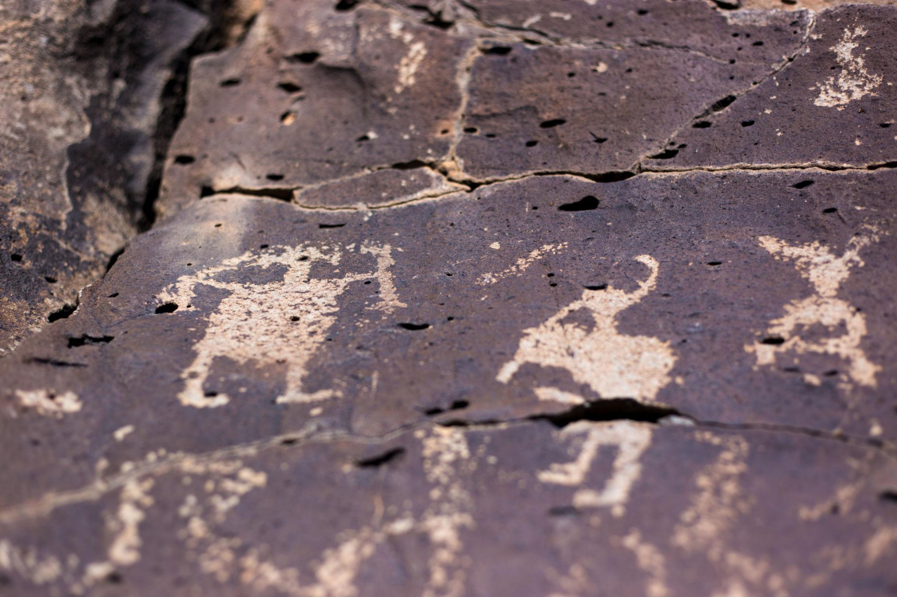

Kokopelli — The Wandering Flute of the Desert
In the high desert wind of the American Southwest, there’s a whisper older than the pueblos and deeper than the canyons. They say it belongs to Kokopelli, the hump-backed wanderer with a flute carved from river reed.
To some, he was a seed-bringer, coaxing crops to rise from the stubborn red earth. To others, he was a traveler’s good fortune, arriving just before long-awaited rain, a good hunt, or a child’s first laugh.
The Song Before the Stranger
Legend claims you could hear him before you saw him — the soft trill of a flute drifting like smoke through canyon halls. When Kokopelli came to a village, babies were born stronger, corn grew taller, and laughter spilled like river water over stone.
His hump isn’t a burden, they say, but a bundle of songs, dreams, and seasons he carries from place to place.
Trickster, Teacher, Traveler
Some nights he was a trickster, swapping seeds in a farmer’s pouch or teasing coyotes into a midnight chase. Other nights he was a teacher, reminding people of stories packed tight in his sack.
His curved silhouette appears across stone walls from Colorado to New Mexico, etched by hands who saw him dance long before roads and fences carved the horizon — reminders that joy is as sacred as survival.
Echoes in Stone

His footprints vanish across the desert, but his spirit lingers in spiral carvings and wind-worn glyphs. Travelers swear that if you stand still as twilight settles and the desert cools, you might catch a distant flute threading through the stars.
Still Wandering
Out here, under an endless sky, Kokopelli doesn’t feel ancient — he feels alive, laughing and dancing just out of sight, forever pushing wanderers a little farther down the road.